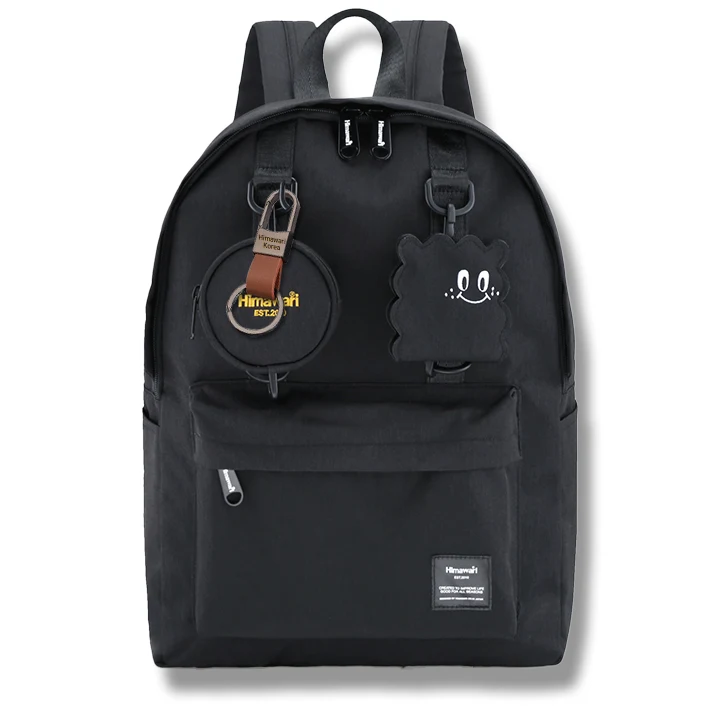

백팩 속 안경집의 자리: 찾기 쉬우면서 눌리지 않게

실내에 들어와 벗은 선글라스를 백팩 위쪽에 잠깐 올려두었다가 다른 물건에 눌린 적이 있나요? 작은 물건이라 빈틈에 들어가지만, 비어 보이는 자리가 항상 적당한 자리는 아닙니다. 안경집 하나가 들어오고 나가는 자리를 정해 보세요.
안경을 접은 크기로 케이스 고르기
렌즈 폭뿐 아니라 접힌 다리와 코받침까지 케이스 안에 자연스럽게 들어가는지 확인합니다. 뚜껑을 닫을 때 안경을 누르거나 다리를 억지로 겹쳐야 한다면 맞는 크기가 아닙니다. 부드러운 주머니는 표면 접촉을 줄이는 데 쓰일 수 있지만 눌림을 막아주는 단단한 케이스와 같은 역할을 한다고 생각하지 마세요. 사용하는 안경과 케이스의 안내를 우선합니다.
위쪽이라는 이유만으로 안전하지는 않아요
가방 윗부분에도 지퍼 곡선이나 손잡이 아래처럼 다른 짐과 만나는 곳이 있습니다. 안경집을 넣은 뒤 지퍼를 닫아 보고, 책이나 노트북이 케이스를 옆에서 밀지 않는지 확인하세요. 작은 포켓이 케이스보다 얕으면 입구가 닫히지 않을 수 있습니다. 모양이 안정되는 별도 자리를 정하되 억지로 끼워 고정하지 않습니다.
열쇠와 함께 꺼내지 않는 자리
열쇠를 찾을 때 안경집까지 움직이면 놓치거나 떨어뜨리기 쉽습니다. 자주 쓰는 열쇠와 안경집은 서로 다른 칸에 두거나 손으로 구분되는 위치로 나눠 보세요. 가방을 안정된 곳에 내려놓고 케이스를 꺼낸 다음 안경을 넣고 닫는 순서를 익힙니다. 가방 겉에 안경다리를 걸어 임시로 보관하는 방식은 피합니다.
두 개를 바꿔 쓴다면 빈 케이스까지
평소 안경과 선글라스를 번갈아 쓴다면 밖에서 벗은 안경이 들어갈 케이스도 필요합니다. 출발할 때 비어 있다는 이유로 빼지 말고, 돌아올 때 담을 물건까지 생각하세요. 케이스 안에 모래나 이물질이 보이면 안경을 바로 넣지 말고 각 제품의 관리 방법으로 정리합니다. 백팩을 바꿀 때는 안경집의 자리도 함께 옮겼는지 확인하면 좋습니다.
참고·안내
- Himawari No.0422 제품 정보
- Himawari No.0422 실제 제품 사진입니다. 안경집 수납 예시를 설명하며 전용 보호 기능을 뜻하지 않습니다.
자주 묻는 질문
단단한 안경집이면 어디에 넣어도 되나요?
케이스도 강한 압력에서 안경을 무조건 보호하지는 않습니다. 책과 충전기가 누르지 않는 자리인지 함께 확인하세요.
안경 전용 포켓이 꼭 필요한가요?
이름보다 실제 케이스가 들어가고 포켓을 닫을 수 있는지가 중요합니다. 제품에 표시되지 않은 보호 성능은 추정하지 않습니다.